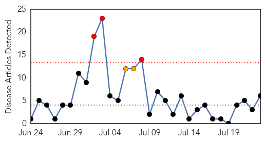
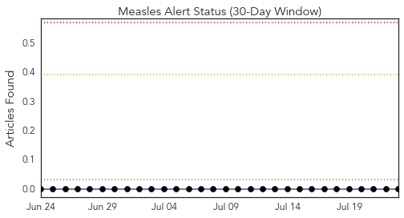
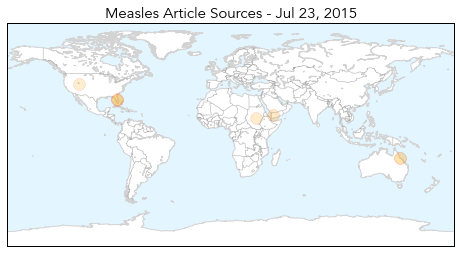
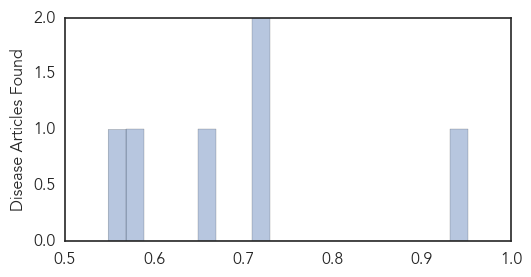

Toggle navigation
Early Warning
Daily Alerts
Measles
Jul 23, 2015
Compare to:
-
Dengue Fever
Hemmorhagic Fever
Mold/Fungal Infection
Influenza
Meningitis
Pertussis / Whooping Cough
Middle East Respiratory Syndrome
Cholera
Hepatitis
Chikungunya
Yellow Fever
Bubonic Plague
West Nile Virus
Swine Flu
Ebola
Unknown
Mumps
30 Day Trends
Web: 3
alerts
, 2
warnings
Twitter: 0
alerts
, 0
warnings
Top Articles:
0.952
Measles alert in Brisbane
0.712
Aggressive Vaccination Prevented Amish Measles Contagion From Spreading Broadly
0.711
Aggressive Vaccination Prevented Amish Measles Contagion From Spreading Broadly
0.660
The State of Healthcare in Yemen Today
0.575
Sudan's other crisis (Opinion)
0.549
School-level immunization rates available to parents; Lawmakers hope information will create peer pressure in favor of vaccination.
Top Tweets:
No tweets found for Jul 23, 2015
Web/News Articles

Tweets

Article Locations

Article Confidences
